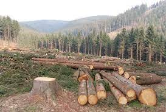
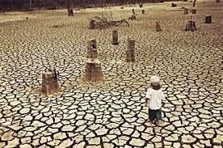
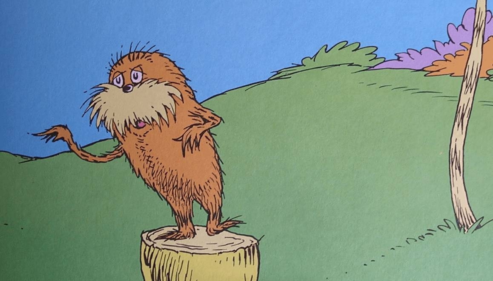

Forest 4 life is based on Deforestation. It is important because, we only have one planet and if humans continue to litter, the world will become unsafe and everything on it will die form the contamination. So if Humans can use less tree made products, more trees can be planted then cut down and wasted. Trees are important because the leaves produce oxygen witch we use to breath. If there are no trees, there will be no air to breath.
 These images are examples of how humans are afecting the earth. As you can see, the land looks dry, with no life. Humans are constintly throwing trash everywhere not thinking of any problems later.
Aporxamantely 10,000 years ago, Deforestation had began with the use of fire, which estamates are that 40-50% of earth's origanal forest are had been lost. But, that mainly happend way before agriculture began 10,000 years later. After Humans choped more trees dow for paper, oils, and pencils. the amount of these items are mass produced so, trees get choped 2x faster.
Here is a link to National Geographic about Deforestation
Deforestation has greatly altered landscapes around the world. About 2,000 years ago, 80% of western Europe was forested; today the figure is 34% of what it use to be. Deforestation is terible. It is the reason many animals
This video does not belong to Forest 4 Life, but it still supports our question on Deforestation. This video is from Learning Junction on youtube.
Relating to what the video says using less materials made up of by trees like the paper or palm oil, we can make it so if no one buys is, people will no longer sell it so, more trees will be planted so the earth can become more healthy.